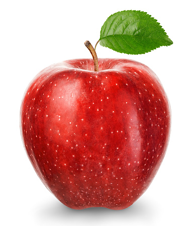
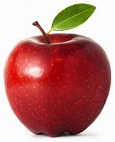
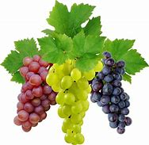
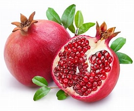
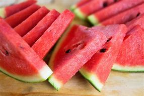

Fruit stall



This nutritious fruit offers multiple
health benefits.Apples may lower your
chance of developing cancer,diabetes,
and heart disease. Research says apples may
also help you lose weight while
improving your gut and brain health.
Oranges amazing health benefits includes
protecting the eyes and improving vision,
enhancing sexual performance, preventing
constipation, bolstering the immune system,
improving mood, promoting dental health,
regulating blood pressure, improving skin
appearance,preventing cancerous cell growth,
promoting digestion of food, and protecting the heart.

Grapes are full of vitamins, minerals and
antioxidants. They’re also full of water,
which can help keep you hydrated.
“Grapes are very low in sodium,” says
DiMarino. “They fit well into a low-
sodium diet plan helping to reduce
blood pressure.”

A Pomegranate is a sweet, tart fruit with thick, red skin.
While the skin is not edible, it holds hundreds of juicy
seeds that you can eat plain or sprinkle on salads, oatmeal,
hummus, and other dishes.People have enjoyed pomegranates
since ancient times for their health benefits.

Watermelon eaters tend to have a higher quality diet
featuring more fiber, magnesium, potassium, vitamin A
and other antioxidants, plus lower in added sugars and
saturated fat than watermelon non-connoisseurs, says Dawn Jackson Blatner, RDN.